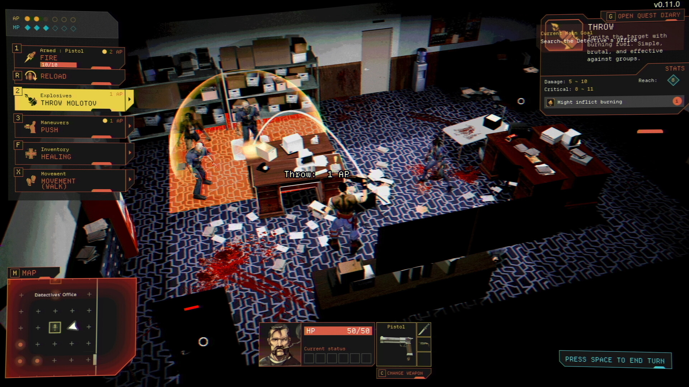
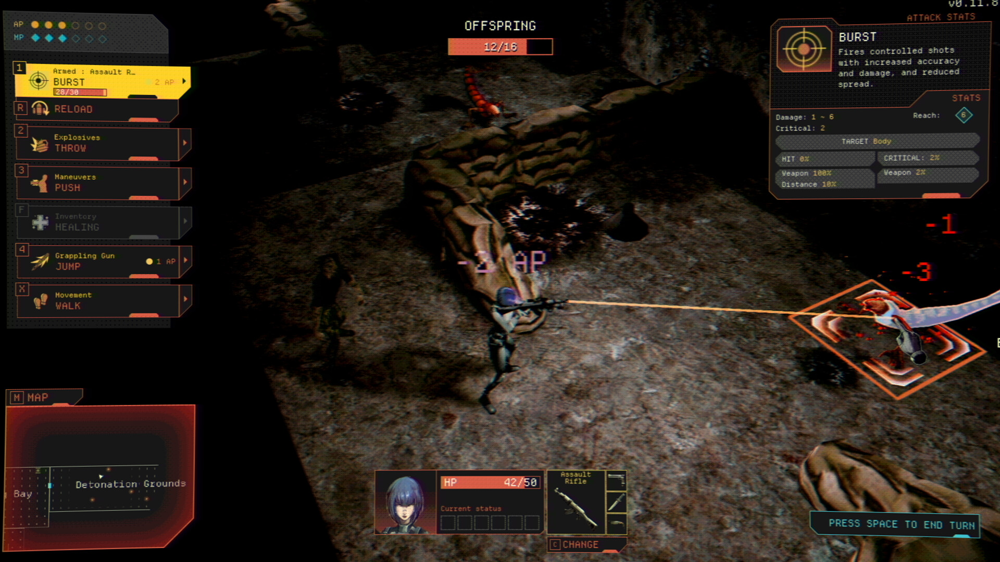
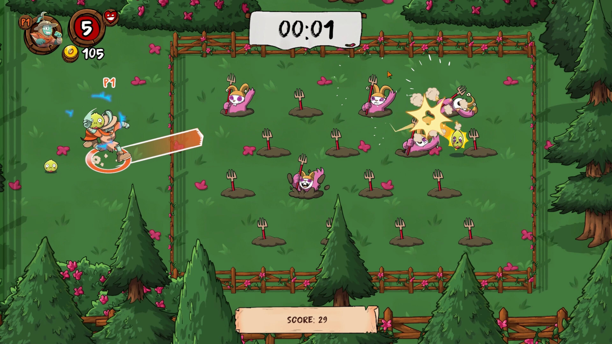
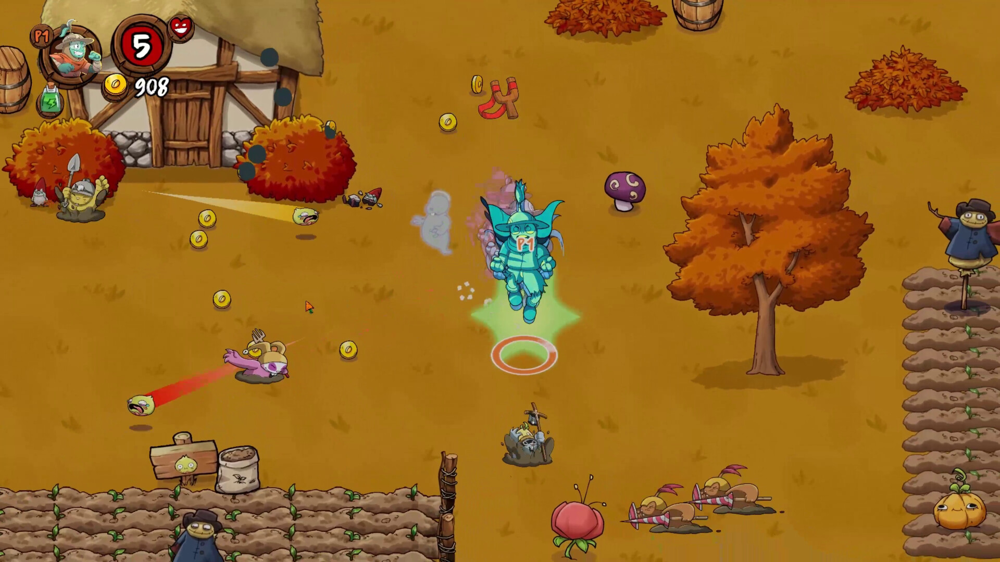

De Bogotá y Medellín a Steam: dos estudios colombianos, dos caminos para salir al mundo
Team Vultures fue a la GDC a buscar editoras y ya lanzó su juego. Indie Level Studio cerró una inversión española para su próximo título. A una semana de SOFA 2026, sus historias muestran cómo se financia hoy un juego hecho en Colombia.

Una industria que ya se mide en millones
Según cifras citadas en la presentación de SOFA 2026, la industria de los videojuegos en Colombia generó 461,1 millones de dólares en 2025. Pero para un estudio colombiano el reto no es solo hacer un buen juego, sino conseguir la plata para terminarlo y la visibilidad para venderlo afuera.
Dos estudios lo están intentando de formas distintas. Uno es de Bogotá y el otro de Medellín. Este reportaje reconstruye sus historias a partir de entrevistas publicadas en medios colombianos, comunicados oficiales y los datos públicos de Steam.
Team Vultures: ingenieros, la GDC y un pueblo con carteles de El Pibe
Giovanni Beltrán, conocido como Agar3s, y Mateo Robayo no venían de la industria del videojuego. «Nosotros tenemos un background de ingenieros de software. Trabajamos con startups por fuera, y hacíamos programación de backend», le contó Beltrán a GamerFocus en febrero. Con ese perfil fundaron en Bogotá Team Vultures, que hoy tiene seis personas.
Su juego, Vultures: Scavengers of Death, es un survival horror táctico por turnos inspirado en los clásicos del género de los noventa. El jugador controla a agentes que entran en una ciudad en cuarentena para recoger materiales e información y salir con vida. Esa ciudad, el Valle de Salento, es una urbe latinoamericana de montaña en una realidad alternativa. «La idea es como si fuese una ciudad en Latinoamérica en las montañas», explicó Beltrán. Y tiene guiños locales: «Se nota mucho en los carteles. Por ahí hay carteles del Pibe, de Margarita Rosa», añadió Robayo.

El punto de quiebre fue un viaje. En 2023 publicaron una demo en Steam y decidieron ir a la Game Developers Conference de San Francisco. «Decidimos que tocaba ir a la GDC porque publicamos una demo de Vultures en 2023», dijo Robayo. Allí estaban las editoras con las que no habían podido hablar desde Colombia. «Desde acá es muy difícil. Estando allá en eventos como GDC uno habla con ellos», resumió Beltrán. Hoy el juego lo publica FireSquid Games.
Cuando hablaron con GamerFocus, el lanzamiento estaba previsto para abril. Llegó a Steam el 13 de mayo de 2026. A 2 de octubre tiene 615 reseñas, con un 81 % positivas («Muy positivas»), y 77 de nota en Metacritic. Su precio en Colombia es de COL$ 24.999, uno de los más bajos en proporción al precio en dólares de los juegos que revisamos en nuestra pieza de datos sobre Steam.
«Desde acá es muy difícil. Estando allá en eventos como GDC uno habla con ellos». — Giovanni Beltrán, Team Vultures
Indie Level Studio: una granja, topos y 400.000 euros
Indie Level Studio nació en Medellín durante la Global Game Jam de 2013 y se formalizó en 2015. Lo dirige Sara Giraldo, con Mauricio Betancourt Hurtado como director creativo y Juan Lopera como director comercial. Además de sus propios juegos, ofrece servicios de desarrollo y codesarrollo para otras empresas. En 2025, Google lo eligió entre los estudios de su Indie Games Fund para Latinoamérica.

Su apuesta propia es Farmageddon, un roguelike de acción en el que hay que defender una granja de oleadas de topos usando los vegetales como proyectiles: se recogen del suelo, se roban en el aire y se hacen rebotar por el escenario como en un pinball. Se puede jugar solo o en cooperativo con hasta cuatro personas. El juego se presentó en el Latin American Games Showcase.
Según El Colombiano, el presupuesto supera los 2.000 millones de pesos. El estudio puso unos 600 millones y Crea Digital, la convocatoria del MinTIC, aportó 100 millones. El salto llegó en junio: la española Aeternum Game Studios, de Talavera de la Reina, anunció una inversión de cerca de 400.000 euros y asumió la edición. «Decidieron invertir en nuestro proyecto para distribuirlo a nivel mundial este segundo semestre», dijo Lopera al diario.
Los números del plan son ambiciosos: el estudio proyecta entre 200.000 y 600.000 copias en el primer año, a un precio de entre 15 y 20 dólares, y se puso como meta llegar a 30.000 listas de deseos en Steam antes del lanzamiento. La demo salió el 13 de junio. El plan publicado en junio hablaba de una versión comercial para PC en septiembre y versiones de consola después, pero a 2 de octubre la página de Steam todavía dice «Próximamente».
El MinTIC usó el caso para defender su programa. «El éxito de Indie Level Studio con este proyecto demuestra que el talento de nuestras regiones tiene calidad de exportación», dijo Andrés Galindo, subdirector de Industrias TI del ministerio.
Dos caminos, un mismo problema
Los dos estudios llegaron al mismo punto por rutas distintas. Team Vultures hizo una demo, la puso a prueba con jugadores reales y viajó a la GDC para hablar con editoras. Indie Level combinó dinero propio, fondos públicos y una inversión extranjera, con más de diez años de trayectoria como respaldo.
Lo que comparten es que su socio editorial no es colombiano: FireSquid publica Vultures y Aeternum, desde España, publica Farmageddon. Los fondos públicos, como Crea Digital, ayudan a arrancar, pero el dinero que permite lanzar un juego al mundo sigue estando afuera. Por eso las ferias importan tanto: son el lugar donde un estudio de Bogotá o de Medellín puede sentarse frente a quien decide.

Lo que viene: SOFA 2026
Del 8 al 12 de octubre, SOFA 2026 se celebra en Corferias, en Bogotá. En su Beta Test Fest, 32 estudios independientes colombianos mostrarán juegos que todavía están en desarrollo, y el público podrá probarlos y hablar con quienes los hacen. Para estudios como estos, ese contacto con los jugadores es la versión local de lo que Team Vultures fue a buscar a la GDC.
Fuentes
- GamerFocus — Hablamos con Team Vultures, por Julián Ramírez (20 feb 2026). Todas las citas de Team Vultures provienen de esta entrevista.
- El Colombiano — Videojuego made in Medellín se lanzará globalmente tras millonaria alianza con estudio europeo, por Andrés Villamizar (5 jun 2026)
- MinTIC — De Medellín a Europa: videojuego colombiano impulsado por Crea Digital (16 jun 2026)
- Google — Estudios seleccionados por el Indie Games Fund 2025
- El Botón A — SOFA 2026 reunirá a 32 estudios independientes
- Steam: Vultures: Scavengers of Death y Farmageddon (datos consultados el 2 oct 2026)